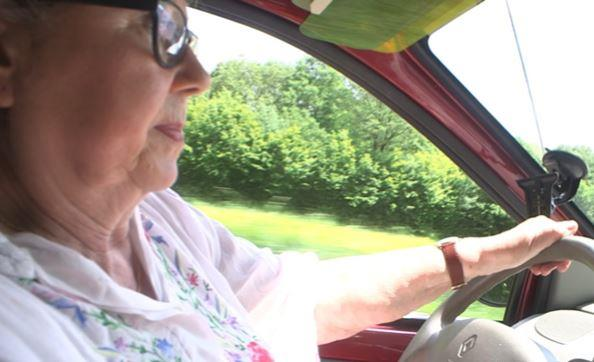
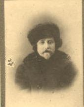
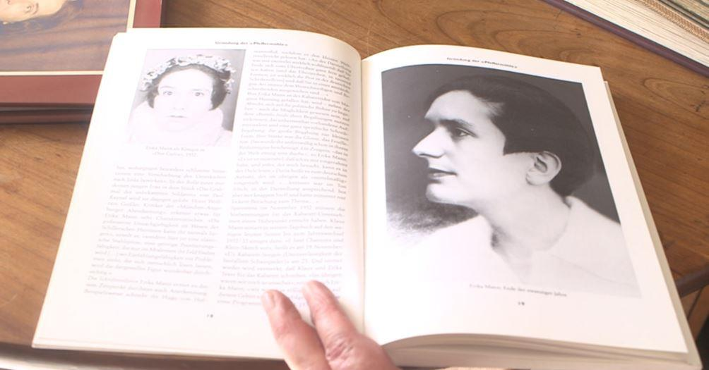
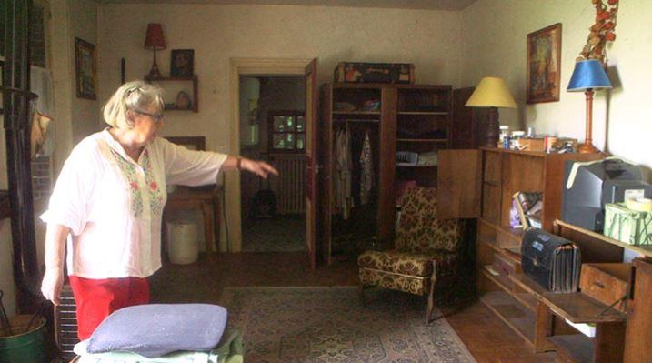
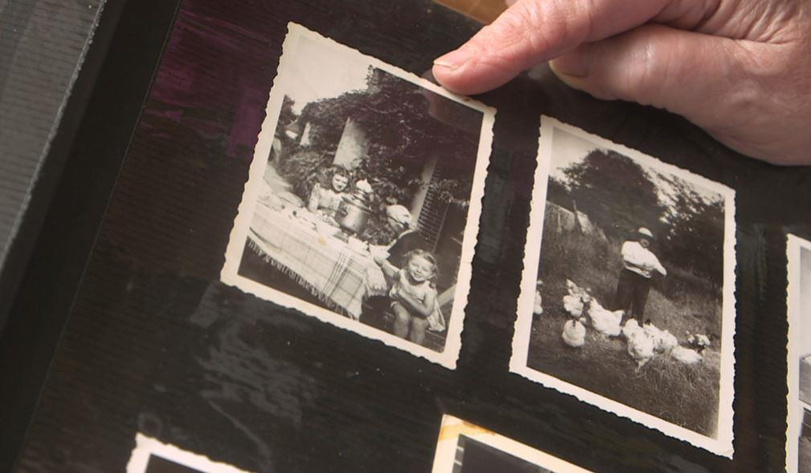

Nadiejda : 100 ans de nostalgies russes. 5e épisode : L’intégration, l’assimilation culturelle : une question de respect réciproque, avec ou sans concessions ?
par Valérie FELDER
Il est évident que lorsque l'on fait un travail lié à la migration, on se pose beaucoup de questions sur ce qu'est l'intégration. On se met à la place de celles &·ceux qui sont parti·e·s il y a 100 ans, mais aussi à la place de ceux qui arrivent aujourd'hui. Leurs difficultés, mais pas seulement. Les dérives liées à la « différence culturelle ». Un slogan qui permet bien des excès au nom du « droit à la différence », au respect des « minorités » ou encore à la priorité de « conserver nos valeurs judéo-chrétiennes ». Ces prétextes ne sont-ils pas des manières de se rendre politiquement populaire dans le camp des plutôt conservateurs ou plutôt contestataires ? Avec l'étiquette « rétrograde » ou « laxiste », en fonction de notre tendance à défendre l'un ou l'autre camp ?
Lorsque, enfant, j'allais à l'école russe, au mur, il y avait une pancarte qui disait :
« RESPECTE TON PAYS D'ACCUEIL, INTÈGRE-TOI DU MIEUX QUE TU PEUX, MAIS N'OUBLIE JAMAIS D'OÙ TU VIENS. »
Nous vivons dans un monde ou le mot respect ne semble pas lié à la compassion, l'amour, la compréhension, le partage alors qu'il ne s'agit pour moi que de cela. N'est-ce pas la base pour vivre ensemble ? Sans compassion, le respect devient une charte à intégrer sans la comprendre.
Partons de trois manières d'aimer parmi d’autres :
l'amour narcissique (parlez-moi de moi, il n'y a que moi qui m'intéresse) ;
l'amour par procuration (je te fais confiance, tu sais ce qui est bon pour moi et tu m'aimes) ;
et l'amour partagé qui naît d'une confiance qui est loin d'être aveugle et qui vise à atteindre une réelle volonté à faire de son mieux pour construire une relation saine.
L'amour partagé nécessite une capacité intellectuelle objective et critique. C'est la seule des trois formes d'amour retenues ici qui emmène vers le respect de l'autre et de soi-même. Le respect, c'est donc de l'amour que l'on offre et que l'on reçoit en retour…
Notre ennemi à tous est souvent l'ignorance, caractérisée par l'absence de culture personnelle, par l’absence de curiosité envers d’autres cultures ; cela débouche alors sur une absence d’ouverture à l'autre.
Ce film m'a permis de rencontrer des Russes appartenant à différentes immigrations certes, mais aussi des Russes aux parcours différents, alors qu'ils étaient issus de la même immigration.
C'était important pour moi de présenter cela, avec les divergences politiques et philosophiques qui peuvent nous opposer, nous différencier. C'est avec cette dynamique que j'ai fait la connaissance de Tatiana Pruzan, une personnalité vraiment intéressante que je suis heureuse de connaître aujourd'hui. Elle m'a emmenée dans la maison de son enfance en Beauce.

Tatiana me conduit dans la maison de son enfance (2017)
Je lui laisse le soin de vous raconter son histoire…
V.F.
TÉMOIGNAGE DE TATIANA PRUZAN
Le grand-père lituanien quand il était journaliste à St PétersbourgDe même que les Européens de l'Ouest croient que tous les Asiatiques mangent du chien, ils prennent tous les émigrés russes des années 1920 pour des « Russes Blancs ». Erreur.
 Igor Pahlen à l'époque où il jouait au théâtre à BerlinLa famille de mon père n'était pas « blanche ». Mon grand-père paternel David, un Juif de Lituanie, ayant étudié le droit et le journalisme à St Pétersbourg, s'était laissé tenter par l'illusion léniniste. Quand, peu de temps après, il s’est éloigné de ce mouvement, c'était trop tard pour intégrer le milieu des « Blancs » tsaristes et chrétiens.
Ma grand-mère Marguerite, quant à elle, était déjà sous l'influence orientaliste car elle admirait le peintre Roerich dont elle avait été l'élève. Après avoir vécu quelques temps loin de la ville, ils ont dû brutalement quitter la Russie et, après des errances en Pologne et en Lituanie, se sont finalement fixés en Allemagne, à Berlin, où ils sont restés jusqu'en 1936 et où David s'occupait clandestinement d'actions anti-communistes.
Marguerite avait une fille d’un premier mariage qui devint connue comme peintre et écrivain sous le nom de Helene Rubissoff et elle eut un garçon avec mon grand-père David, mon père Igor qui fut connu comme acteur et chansonnier de cabaret politique en Allemagne et en Suisse, dans la compagnie de Erika Mann le « Pfeffer Mühle », sous le nom de Igor Pahlen.
Dans les années 30, à Paris, ma grand-mère devint une adepte du « mage » Gürjieff1 mais l'abandonna pour suivre l'enseignement d'un gourou indien.

La photo représente Erika Mann, fille de Thomas Mann l'écrivain, laquelle dirigeait une troupe de cabaret politique à Zürich. En 1936, il a fallu fuir en France et en Amérique.
Pendant la deuxième guerre mondiale, toute la famille s'installa en France, dans un hameau de Beauce. C'est là que mes parents se sont rencontrés. Ma future mère, Katia, jeune fille russe, y était hébergée par une famille française avec sa mère.
Celle-ci, veuve d'un officier « blanc » de l'armée de Drozdovsky, épousé en Crimée, avec qui elle avait été évacuée de Sébastopol, survivait péniblement après la mort de son mari qui avait succombé à ses blessures à Paris en 1927.
C'est dans ce hameau crasseux, au fin fond de la campagne, que je naquis en 1944 sous les bombes, avec la nationalité française puisque ma mère l'avait déjà. Et c'est là que je passai mon enfance jusqu'à l'âge de 12 ans.

Je suis née ici…(2017)
Je fus élevée par les parents de mon père Marguerite et David. Mes parents, quant à eux, habitaient Paris où il y avait du travail et où naquit mon frère. Ma famille ne fréquentant pas les émigrés Blancs de Paris, j'ai vécu une enfance assez solitaire. Ni russe ni française, pas catholique dans une école de sœurs à cornettes, recueillant les meilleures notes à l'école, ce qui me valait une jalousie féroce en plus de la discrimination en tant qu'« étrangère », ne comprenant pas les codes des sociétés bourgeoise et paysanne de Beauce, je me croyais seule au monde.

L'heure du thé avec le samovar et la basse-cour du grand-père David (1946)
À l'âge de huit ans, mes parents eurent la bonne idée de m'envoyer au camp d'été de l'ACER2. C'est là que je suis sortie de mon isolement. Tout le monde y parlait la langue de ma famille ! Je parlais fort bien le russe, mon grand-père m'avait appris à le lire et l'écrire. Toutefois, je n'étais encore pas « comme les autres » puisque personne ne connaissait mes parents, je ne connaissais pas les prières en russe, je n'avais pas été à l'école russe, je n'avais aucune amie russe, je ne connaissais pas les codes de cette communauté non plus. La situation s'est améliorée en quinze ans de fréquentation de l'ACER qui est devenue ma deuxième famille.
Quand j'eus 19 ans, je fus engagée pour chanter dans un cabaret russe de Paris. En même temps, je faisais des études à la Sorbonne et à l’École Supérieure d'Interprètes et Traducteurs. Ayant raté l'examen d'interprétariat le lendemain de la mort de ma mère, je n'obtins que le diplôme de traductrice.
En 1968, j'ai épousé le fils d'un cosaque du Don émigré avec qui j'ai passé deux ans au Liban et un an en Tunisie. C'est à Beyrouth que nous avons eu un fils. Nous nous sommes séparés peu d'années plus tard. Après une année à Bruxelles où mon fils de quatre ans acquit rapidement l'accent, nous sommes revenus à Paris grâce à une amie.
Diplôme en poche, je fus engagée dans la métallurgie comme traductrice, puis assistante d'ingénieur, et je fis de nombreux séjours en URSS, essentiellement à Moscou, où j'évoluai dans le monde passionnant et dangereux des « dissidents ». J'ai beaucoup aimé cette période.
Mon fils a grandi, il est devenu pilote de chasse puis pilote de ligne. Il a une fille.
Maintenant, je passe ma retraite dans la région où je suis née, en Beauce. En France.
Partager cette page